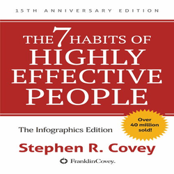
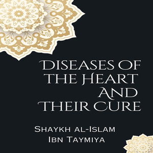
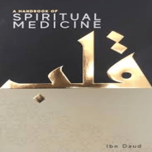

Pir-e-Kamil
Genre: Novel
Author: Umera Ahmed
Original languages: Urdu, English

The 7 Habits of Highly Effective People
Genre: Personal-Development.
Author: Stephen Covey

Diseases of the Hearts and Their Cures
Genre: Spirituality
Author: Ibn Taymiyya

Jannat Kay Pattay
Genre: Novel
Author: Nemrah Ahmed
Original languages: Urdu, English
The Parables of the Qur’an
Genre: Personal-Development.
Author: Yasir Qadhi
Steve Jobs
Genre: Biography,
History,
Technology,
Author: Walter Isaacson

Allah Loves
Genre: Personal-Development
Spirituality
Author: Omar Suleiman

A Handbook of Spiritual Medicine
Genre: Spirituality,self-purification
Author: Book by Ibn Daud